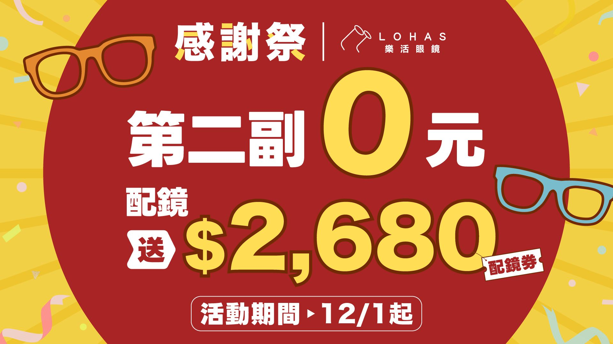

情境 01衣服天天換,
衣服天天換,
眼鏡也跟著換
眼鏡也是你的穿搭配件

這副也好看、那副也捨不得放下?
這次不用二選一!
眼鏡也是你的穿搭配件
辦公專注,生活放鬆
不同場合,換一副更適合的
忘了帶、壓壞了也不狼狽
這次不用二選一
功能性鏡片依個人驗光結果與用眼需求選擇,現場由驗光人員協助建議。
原價方案配鏡
贈 2,680 元配鏡折價券一張
憑券折抵第二副配鏡,符合方案條件可享 0 元
滑滑看每一間店,看到喜歡的直接預約
2026/12/1 – 2027/1/31,配好新眼鏡,也陪你的小夥伴換上全新模樣
收集祭典福引全部獎品,就能領取「金魚芽芽擬態圖紙」,讓芽芽化身搖曳尾鰭的小金魚。
等金魚游上紙網,抓準時機撈起來!小心,紙網泡太久會破。
瞄準移動的獎品,用軟木塞挑戰準度,替祭典留下好成績。
簽到、抽御神籤、玩小遊戲收集小判,到屋台兌換芽芽的祭典時裝與皮膚。
活動開始後:開啟樂活 APP → 芽芽 → 感謝祭
金魚圖紙為祭典福引全收集獎勵,每帳號限領一次;請於活動頁顯示的兌換期限內領取。下載 APP 或試穿不代表取得獎品。小判獎勵場次、兌換品項與福引抽取方式,以 APP 活動頁為準。
選門市 → 選時段 → 填姓名電話,一分鐘完成
透過 AI 精準測量度數,配出最清晰舒適的眼鏡
眼睛蒸氣熱敷,放鬆後再驗光
獨家配方護眼清爽茶,風靡十年
度數、方案、保養紀錄都在 APP


社群分享指定貼文,
加碼抽 100～500 元現金券!
活動期間 2026/12/1 – 2027/1/31。參加方式、使用限制及活動細節依總部正式活動規範,不得與其他優惠併用。